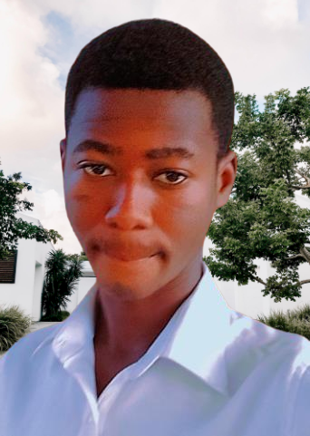
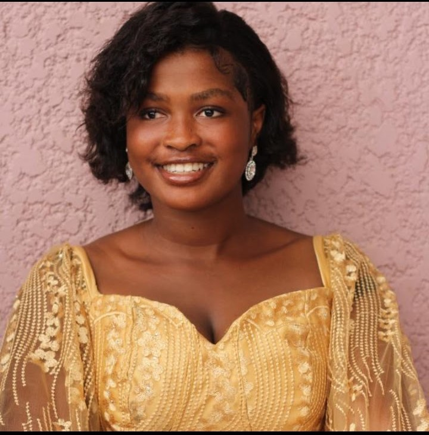

Faculty
Welcome to Lerricksville University Computer Science Faculty page. Our department boasts a diverse and accomplished team of faculty members who are passionate about advancing computer science through teaching and cutting-edge research.
Department Leadership

Dr. Derrick Takyi - Departmental chairman.
Dr. Takyi is a visionary leader and accomplished academic serving as the Chairman of the Computer Science Department. With a profound commitment to excellence in education and research, Dr. Takyi brings a wealth of experience and expertise to our vibrant academic community. Dr. Takyi earned his Ph.D. in Computer Science from MIT, where he specialized in artificial intelligence. His research contributions have significantly impacted the field, with a focus on argumented reality and artificial intelligence. Driven by a vision for the future of computer science education and research, Dr. Takyi is committed to fostering an inclusive and innovative environment. He believes in the power of technology to drive positive change and is dedicated to positioning our department at the forefront of advancements in computer science.
Contact: takyiderrick1@gmail.com - +233247512548.
Dr. Takyi is a visionary leader and accomplished academic serving as the Chairman of the Computer Science Department. With a profound commitment to excellence in education and research, Dr. Takyi brings a wealth of experience and expertise to our vibrant academic community. Dr. Takyi earned his Ph.D. in Computer Science from MIT, where he specialized in artificial intelligence. His research contributions have significantly impacted the field, with a focus on argumented reality and artificial intelligence. Driven by a vision for the future of computer science education and research, Dr. Takyi is committed to fostering an inclusive and innovative environment. He believes in the power of technology to drive positive change and is dedicated to positioning our department at the forefront of advancements in computer science.
Contact: takyiderrick1@gmail.com - +233247512548.

Dr. Bridget Agyei Antwiwaa - Assistant departmental chairwoman.
Dr. Antwiwaa earned her Ph.D. in Computer Science from the University of Harvard, specializing in cybersecurity. Her research contributions have significantly advanced the field, particularly in data breaches and hacking. A respected member of our faculty for over 12 years, Dr. Antwiwaa has been a driving force in shaping the department's academic programs, advocating for inclusivity, and mentoring the next generation of computer scientists. She has published extensively in reputable journals and conferences, contributing valuable insights to cybersecurity.
Contact: MiReina12@gmail.com - +233241430196.
Dr. Antwiwaa earned her Ph.D. in Computer Science from the University of Harvard, specializing in cybersecurity. Her research contributions have significantly advanced the field, particularly in data breaches and hacking. A respected member of our faculty for over 12 years, Dr. Antwiwaa has been a driving force in shaping the department's academic programs, advocating for inclusivity, and mentoring the next generation of computer scientists. She has published extensively in reputable journals and conferences, contributing valuable insights to cybersecurity.
Contact: MiReina12@gmail.com - +233241430196.
Here is a list of some of our faculty members -
- Prof. Jane Doe - Computer Networks.
- Prof. David Johnson - Software Engineering.
- Prof. Mary Brown - Machine Learning
Contact: Jdoe456@gmail.com.
Contact:Djohnson@gmail.com.
Contact:Bmary12@gmail.com